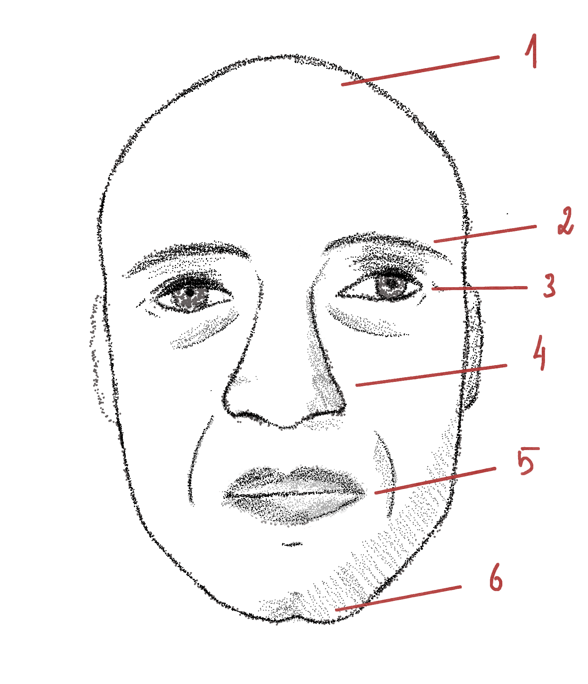

Gratidão
Pela sua curiosidade e ajuda.
- Calvice OLEOSA: permite a'O Beijocador enfiar-se em espaços apertados tais como fechaduras, frechas de portas, claraboias, janelas entre-abertas, rodapés, solas de sapato. É importante registar o rasto de óleo e descobrir o ponto de entrada d'O Beijocador, de modo a tapar e evitar Beijos futuros.
- Sobrancelhas FINAS: para evitar qualquer tipo de comichão e/ou cócegas nas suas vítimas. O Beijo torna-se, assim, silencioso.
- Olhar VAZIO: sugere que a visão não é o sentido que O Beijocador usa para se orientar, nem o mais apurado. Teoriza-se que os olhos d'O Beijocador são meramente ornamentais, permitindo-O evitar atenções desnecessárias no dia a dia.
- Nariz AMEAÇADOR: para uma inalação de um elevado volume de ar, resultando num Beijo prolongado e com elevado poder de sucção. Não ficando ofegante após O Beijo, O Beijocador poderá rapidamente escapulir-se da casa das suas vítimas.
- Lábios CARNUDOS: permitem maximizar a volúpia, selando hermeticamente a testa da vítima. São escarlates, resultado de uma rica irrigação sanguínea.
- Queixo ACHATADO: evita o contacto precipitado com o nariz das suas vítimas. A falta total de pilosidade é também um mecanismo para evitar qualquer tipo de detecção.